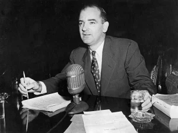

1950’lerdeki Kızıl Korku’ya Joseph McCarthy mi neden oldu?
Joseph McCarthy, kendisini siyasi yıldızlığa fırlatan kışkırtıcı Lincoln Günü konuşmasını yaptığında Wisconsin’de henüz ilk döneminde olan Cumhuriyetçi bir senatördü. Kapitalist Amerika Birleşik Devletleri ile komünist Sovyetler Birliği arasındaki gerilim İkinci Dünya Savaşı’nın sona ermesinden bu yana giderek tırmanmaktaydı. 
{kind=link}
Senatör, 9 Şubat 1950’de Wheeling, Batı Virginia’daki Cumhuriyetçi Kadınlar Kulübü’nde yaptığı konuşmada, komünist ateistler ile kapitalist Hıristiyanlar arasındaki “nihai, topyekûn savaşı” kıyamet terimleriyle tanımladı. Sovyet etki alanındaki insanların sayısının sadece altı yıl içinde katlanarak arttığını ve komünist “düşmanları içeriden” yok edemezse ABD’nin de bu saflara katılabileceğini ilan etti. McCarthy daha sonra komünist olduklarını iddia ettiği 205 Dışişleri Bakanlığı çalışanının isimlerini içeren bir liste hazırladı. Amerikalı gazeteciler bu iddianın üzerine atladılar. McCarthy daha sonra Dışişleri Bakanlığı’ndaki komünistlerin sayısını 57 ve 81 olarak değiştirse de, halk arasında Sovyet ajanlarının iç cepheden hükümetin en üst kademelerine kadar sızdığı korkusunu yaymayı başardı. Bu korku yeni değildi: Birinci Dünya Savaşı ve 1917 Rus Devrimi’nden hemen sonra da benzer antikomünist duygular ülkeyi sarmıştı. Bu nedenle 1950’lerde Amerika’yı saran histeri dönüşümlü olarak İkinci Kızıl Korku ve “McCarthycilik” dönemi olarak adlandırıldı. Ancak McCarthy bu alevlerin en popüler körükleyicisi olsa da, Amerika Birleşik Devletleri’ni saran yangından şahsen sorumlu değildi.
McCarthy’nin 1944 ve 1950 yılları arasında Sovyet etki alanının “180.000.000 kişiden 80.000.000.000 kişiye” kontrol edilemez bir şekilde genişlediğine ilişkin iddiası, Cumhuriyetçi Temsilci Richard M. Nixon’ın birkaç hafta önce Temsilciler Meclisi’nde yaptığı açıklamaların abartılı bir şekilde yanlış aktarılmasıydı. (Adeti olduğu üzere McCarthy, haber döngüsü orijinal rakamını bildirdikten sonra “80.000.000.000” ifadesini “800.000.000” olarak düzeltmiştir). Nixon, Meclis’ten, nüfuz sahibi pozisyonlarda deşifre olmuş hükümet çalışanlarının bulunmasının politika üzerindeki etkilerini dikkate almasını istemişti. Sovyet yanlısı yıkıcı faaliyetlerine ilişkin sansasyonel bir soruşturmanın ardından kısa süre önce yalancı şahitlikten hüküm giymiş olan üst düzey bir Dışişleri Bakanlığı yetkilisi olan Alger Hiss’ten söz ediyordu. Hiss’in 1950’deki mahkumiyeti, küresel siyasi manzaradaki büyük tektonik değişimlerin ardından geldi. Demir Perde’nin arkasında 1940’ların ikinci yarısında oluşan Sovyet yanlısı Doğu Bloku’na ek olarak, komünistler 1949’da Çin’in kontrolünü ele geçirmişlerdi ve komünizm Kore yarımadasını da ele geçirme tehdidi altındaydı. Uzun süren Hiss soruşturması ve davaları, Amerika Birleşik Devletleri’nin SSCB’nin bir sonraki hedefi olduğuna ve tehdidin iç cephede göz göre göre saklandığına dair Amerika’da var olan korkuları körükledi.
1948 yılında Nixon ve Karl E. Mundt, tüm ABD Komünist Partisi üyelerinin devlet tarafından kayıt altına alınmasını zorunlu kılan bir yasanın sponsorluğunu üstlendi. Yasa Temsilciler Meclisi’nden 319’a karşı 58 oyla ezici bir çoğunlukla geçti, ancak Senato’da bocaladı. Bunun üzerine etkili muhafazakar Demokrat Senatör Patrick A. McCarran, Mundt-Nixon hükümlerini kapsayan bir torba yasa tasarısına sponsor oldu. Bu yasa ayrıca komünist yıkıcıların acil olarak gözaltına alınmasına izin veren bir tedbiri de içeriyordu. Anayasaya uygunluğu tartışmalı olmasına rağmen McCarran Yasası Eylül 1950’de Senato’dan 70’e karşı 7 oyla geçti. Bu durumdan rahatsız olan Başkan Harry S. Truman yasayı veto etti, ancak veto Kongre’nin her iki kanadı tarafından da geçersiz kılındı.
Hem Mundt-Nixon tasarısına hem de McCarran Yasasına Kongre’den gelen yaygın destek, 1940’ların sonlarında Amerika’nın komünizmle ilgili söyleminin tonunu yansıtıyordu. Komünist yıkıcılığın ciddi bir ulusal güvenlik tehdidi olduğuna işaret eden bir dizi uluslararası ve yerel olayın ardından ülke diken üstündeydi. Her iki büyük partiden Kongre üyeleri ve senatörler yıkıcı davranışlara karşı yumuşak görünmekten hoşlanmıyor ve ideolojik muhalifleri susturmak için bilinçli olarak baskıcı bir yaklaşım benimsiyorlardı. Bunu McCarthy’den oldukça bağımsız bir şekilde yaptılar. O halde “McCarthycilik” yanlış bir isimlendirmedir. Joseph McCarthy 1950’lerin antikomünist histerisine neden olmaktan ziyade, var olan korkuları bir kreşendoya taşımıştır.